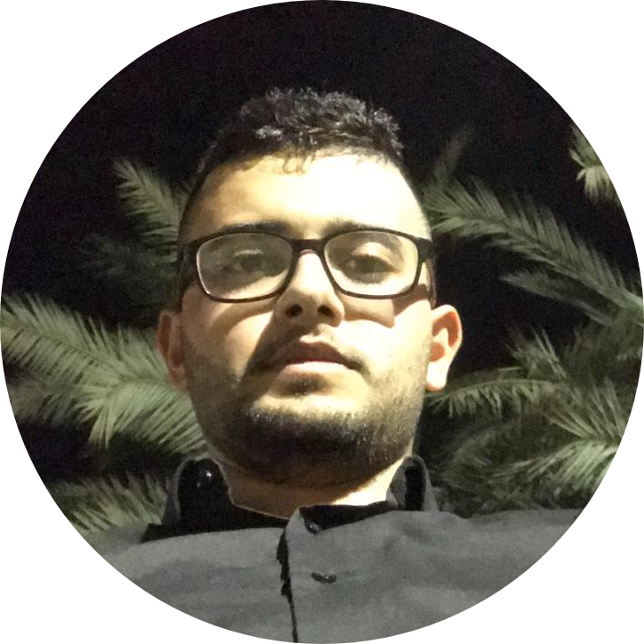

|  | Yaser Nimerlooking for Junior Position as web developer Email: Yaser.nmr.yn@gmail.com |
| 2018 – 2020 | Tutor for programming language C and C++, Hedva 1 + 2, Linear Algebra. in Sami Shamoon College. |
| 2018–2019 | “Perach” Program, Tutor for first-year software engineering students. |
| 2016–2017 | Preparing Students for Bagrut exams, Volunteering at the community center, I would teach students and prepare them for matriculation in mathematics. |
| Web development | ⭐️⭐️⭐️⭐️ |
| Python | ⭐️⭐️⭐️⭐️ |
| Java | ⭐️⭐️⭐️⭐️ |
| C# | ⭐️⭐️⭐️⭐️ |